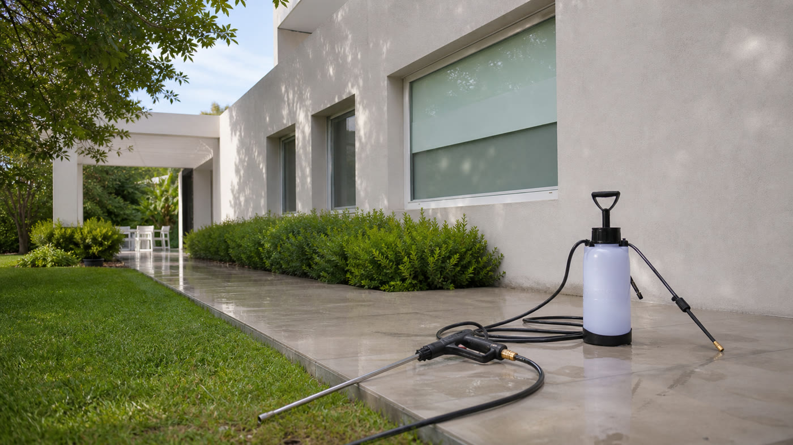
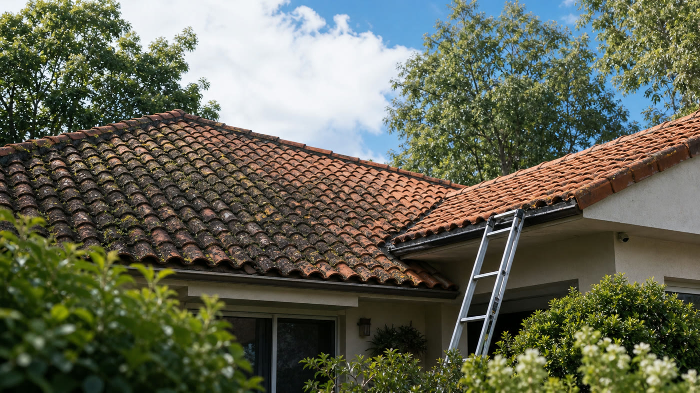
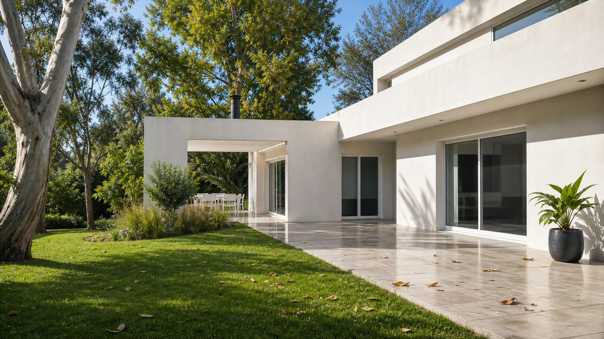
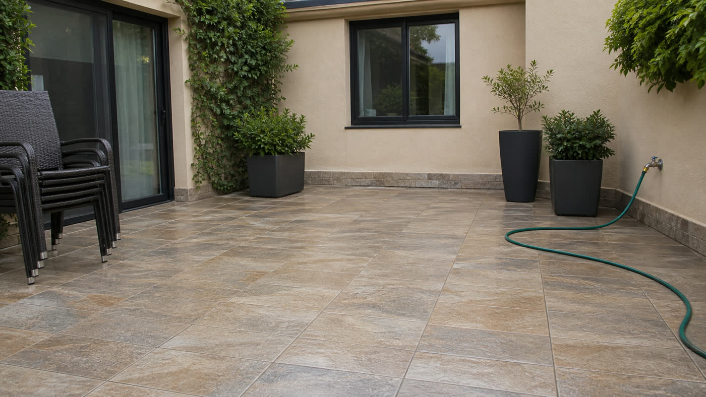
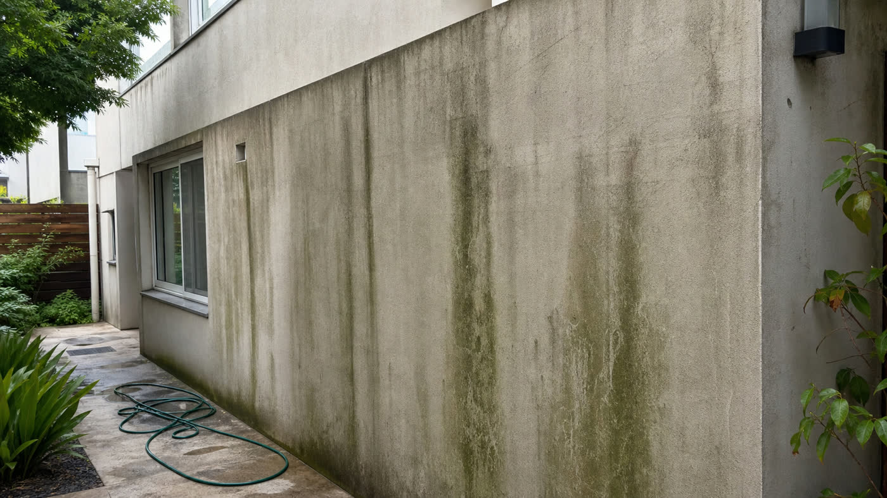
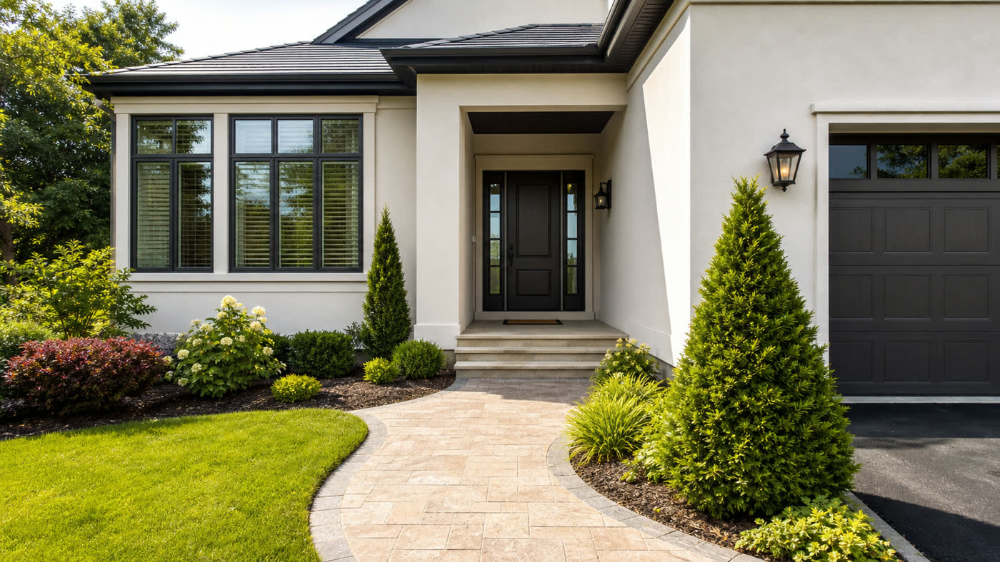
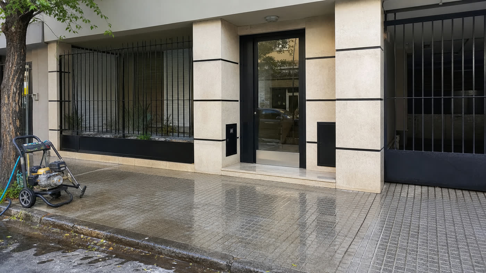

Guías útiles
Contenido para entender y cuidar mejor el exterior de una casa.
Guías prácticas sobre precio, frecuencia, verdín, techos, veredas, medianeras, zonas de servicio y cómo pedir una cotización sin perder tiempo.
Artículos
Guías para propietarios
Notas simples para saber cuándo conviene limpiar, qué pedir y qué mirar antes de cotizar.

Cuánto cuesta lavar el frente de una casa
Qué variables influyen en el presupuesto y qué datos conviene enviar.
Leer guía
Lavado a presión o soft wash: cuál conviene
Diferencias prácticas según superficie, suciedad y riesgo de daño.
Leer guía
Cómo limpiar verdín de paredes y patios
Por qué aparece, cuándo actuar y qué evitar en superficies delicadas.
Leer guía
Se pueden lavar techos de tejas con hidrolavadora?
Qué evaluar antes de limpiar tejas, altura y zonas difíciles.
Leer guía
Qué fotos mandar para cotizar un lavado exterior
Una checklist simple para recibir un presupuesto más preciso.
Leer guía
Cada cuánto conviene limpiar el exterior de una casa
Frecuencia recomendada según uso, orientación, humedad y árboles cercanos.
Leer guía
Errores comunes al usar hidrolavadora en casa
Decisiones que pueden marcar paredes, juntas, pintura o superficies sensibles.
Leer guía
Cómo preparar la casa antes de un lavado a presión
Qué mover, qué avisar y cómo dejar listo el exterior para trabajar mejor.
Leer guía
Lavado de veredas, entradas y patios
Cuándo conviene limpiar pisos exteriores con barro, verdín o manchas de uso.
Leer guía
Lavado de medianeras y paredes exteriores
Qué mirar antes de limpiar paredes altas, pintadas o con humedad superficial.
Leer guía
Limpieza exterior antes de vender o alquilar
Cómo mejorar la primera impresión de una casa antes de fotos o visitas.
Leer guía
Hidrolavado para consorcios y locales
Qué datos enviar para cotizar accesos, frentes comerciales y veredas.
Leer guía
Lavado a presión en Zona Norte
Qué trabajos se pueden cotizar desde San Martín y alrededores.
Leer guíaConsulta
Tenés una superficie específica?
Mandá fotos por WhatsApp y te orientamos sobre alcance, tiempos y forma de cotización.